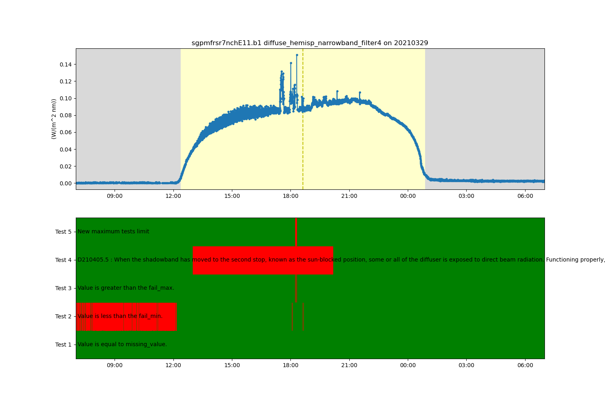

Note
Click here to download the full example code
Working with and expanding embedded quality control variables#
This is an example of how to use existing or create new quality control varibles and extend the quality control flagging. The anicllary quality control variable can be expanded by integrating external Data Quality Reports, adding additional generic ACT tests, instrument specific ACT tests, or reading a configuraiton file of known failures to clean up the data variable.
- 
[DOWNLOADING] sgpmfrsr7nchE11.b1.20210329.070000.nc
['/home/runner/work/ACT/ACT/examples/sgpmfrsr7nchE11.b1/sgpmfrsr7nchE11.b1.20210329.070000.nc']
<xarray.Dataset>
Dimensions: (time: 4320)
Coordinates:
* time (time) datetime64[ns] 2021-03-29T07...
Data variables:
diffuse_hemisp_narrowband_filter4 (time) float32 dask.array<chunksize=(4320,), meta=np.ndarray>
qc_diffuse_hemisp_narrowband_filter4 (time) int32 dask.array<chunksize=(4320,), meta=np.ndarray>
lat float32 ...
lon float32 ...
Attributes: (12/31)
command_line: mfrsr7nch_ingest -s sgp -f E11
Conventions: ARM-1.2
process_version: ingest-mfrsr7nch-1.3-0.el7
dod_version: mfrsr7nch-b1-1.1
input_source: /data/collection/sgp/sgpmfrsr7nchE11.00/MFRS...
site_id: sgp
... ...
doi: 10.5439/1429369
history: created by user dsmgr on machine flint at 20...
_file_dates: ['20210329']
_file_times: ['070000']
_datastream: sgpmfrsr7nchE11.b1
_arm_standards_flag: 1
import act
import matplotlib.pyplot as plt
import os
# Place your username and token here for use with ARM Live service
# https://adc.arm.gov/armlive/
username = os.getenv('ARM_USERNAME')
token = os.getenv('ARM_PASSWORD')
# We can use the ACT module for downloading data from the ARM web service
if username is None or token is None or len(username) == 0 or len(token) == 0:
results = act.tests.sample_files.EXAMPLE_MFRSR
else:
results = act.discovery.download_data(username, token, 'sgpmfrsr7nchE11.b1', '2021-03-29', '2021-03-29')
print(results)
# Let's plot up some data to see what we're working with. For this example, we'll use
# diffuse_hemisp_narrowband_filter4. The data files uses an ancillary quality control variable
# named with the same value prepened with 'qc_'. To read less data into memory we can tell
# the reader to only read in the variables we plan to use with the keep_variables keyword.
variable = 'diffuse_hemisp_narrowband_filter4'
qc_variable = 'qc_' + variable
# Next up is to read the file into an xarray object using the ACT reader. We then can print out a
# listing of everything in the object. Also, call the cleanup method on the object by setting
# the cleanup_qc keyword. This will convert the quality control variable from the ARM stanard
# to Climate and Forecast standard used internally for all the quality control calls.
keep_vars = [variable, qc_variable, 'lat', 'lon']
obj = act.io.armfiles.read_netcdf(results, keep_variables=keep_vars, cleanup_qc=True)
print(obj)
# Create a plotting display object with 2 plots
display = act.plotting.TimeSeriesDisplay(obj, figsize=(15, 10), subplot_shape=(2, ))
# Plot up the diffuse variable in the first plot
display.plot(variable, subplot_index=(0,), day_night_background=True)
# Plot up the QC variable in the second plot
display.qc_flag_block_plot(variable, subplot_index=(1,))
plt.show()
# Now lets remove some of these outliers by modifying the data in the Dataset based on
# the test results stored in the ancillary quality control variable.
# By default the ancillary quality control variable is removed after appying the test
# results, but we are going to use the del_qc_var to keep in Dataset so it
# can be used with additional tests later.
obj.qcfilter.datafilter(variable, rm_tests=[2, 3], del_qc_var=False)
# Create a plotting display object with 2 plots
display = act.plotting.TimeSeriesDisplay(obj, figsize=(15, 10), subplot_shape=(2,))
# Plot up the diffuse variable in the first plot
display.plot(variable, subplot_index=(0,), day_night_background=True)
# Plot up the QC variable in the second plot
display.qc_flag_block_plot(variable, subplot_index=(1,))
plt.show()
# Since the embedded QC is not removing all the outliers, let's check to see if there are any
# Data Quality Reports (DQR) using ARMs DQR Webservice. The great thing is, that ACT has codes
# for working with this webservice.
# In this example, we can see that there's a DQR for a shadowband misalignment and we can
# find out more information by looking at the actual DQR:
# https://adc.arm.gov/ArchiveServices/DQRService?dqrid=D210405.5
# Query the ARM DQR Webservice and update the ancillary quality control variable to
# contain a new test using information from the DQR.
obj = act.qc.arm.add_dqr_to_qc(obj, variable=variable)
# Create a plotting display object with 2 plots
display = act.plotting.TimeSeriesDisplay(obj, figsize=(15, 10), subplot_shape=(2,))
# Plot up the diffuse variable in the first plot
display.plot(variable, subplot_index=(0,), day_night_background=True)
# Plot up the QC variable in the second plot
display.qc_flag_block_plot(variable, subplot_index=(1,))
plt.show()
# ACT has a number of additional QC tests that could be applied to the data. For this next
# example, let's apply a new maximum test. We are also
# going to filter the data based on this new test and plot up the results.
# Add a new maximum tests
obj.qcfilter.add_greater_test(variable, 0.4, test_meaning='New maximum tests limit')
# Filter that test out
obj.qcfilter.datafilter(variable, rm_tests=5, del_qc_var=False)
# Create a plotting display object with 2 plots
display = act.plotting.TimeSeriesDisplay(obj, figsize=(15, 10), subplot_shape=(2,))
# Plot up the diffuse variable in the first plot
display.plot(variable, subplot_index=(0,), day_night_background=True)
# Plot up the QC variable in the second plot
display.qc_flag_block_plot(variable, subplot_index=(1,))
plt.show()
# ACT has a growing library of instrument specific tests such as the fast-fourier transform
# test to detect shading which was adapted from Alexandrov et al 2007. The adaption is that
# it is applied in a moving window style approach.
# Apply test
obj = act.qc.fft_shading_test(obj, variable=variable)
# Create a plotting display object with 2 plots
display = act.plotting.TimeSeriesDisplay(obj, figsize=(15, 10), subplot_shape=(2,))
# Plot up the diffuse variable in the first plot
display.plot(variable, subplot_index=(0,), day_night_background=True)
# Plot up the QC variable in the second plot
display.qc_flag_block_plot(variable, subplot_index=(1,))
plt.show()
# The orginal embedded quality control variable plus additional tests we applied
# to the data did a good job removing incorrect data, but we can manually clean up the
# data a little more. By inspecting the data we can extract the time ranges where
# data is incorrect and create a new test using those time ranges. Instead of hardcoding
# those into the program we can write them to a YAML file for use in other programs or
# to give to other users.
# There is a file in the same directory called sgpmfrsr7nchE11.b1.yaml with times of
# incorrect or suspect values that can be read and applied to the Dataset.
from act.qc.add_supplemental_qc import apply_supplemental_qc
apply_supplemental_qc(obj, 'sgpmfrsr7nchE11.b1.yaml')
# We can apply or reapply the data filter on the variable in the Dataset to change
# the data values failing tests to NaN by passing a list of test numbers we want
# to use. In this case we are not going to apply the DQR test (number 4) so we leave
# that number out of the list.
obj.qcfilter.datafilter(variable, rm_tests=[2, 3, 5, 6, 7, 8], del_qc_var=False)
# Create a plotting display object with 2 plots
display = act.plotting.TimeSeriesDisplay(obj, figsize=(15, 10), subplot_shape=(2,))
# Plot up the diffuse variable in the first plot
display.plot(variable, subplot_index=(0,), day_night_background=True)
# Plot up the QC variable in the second plot
display.qc_flag_block_plot(variable, subplot_index=(1,))
plt.show()
Total running time of the script: ( 0 minutes 4.949 seconds)